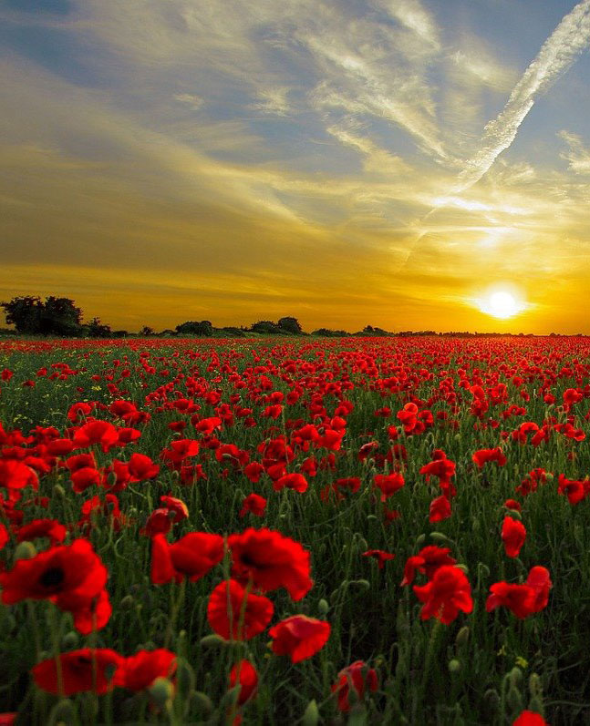
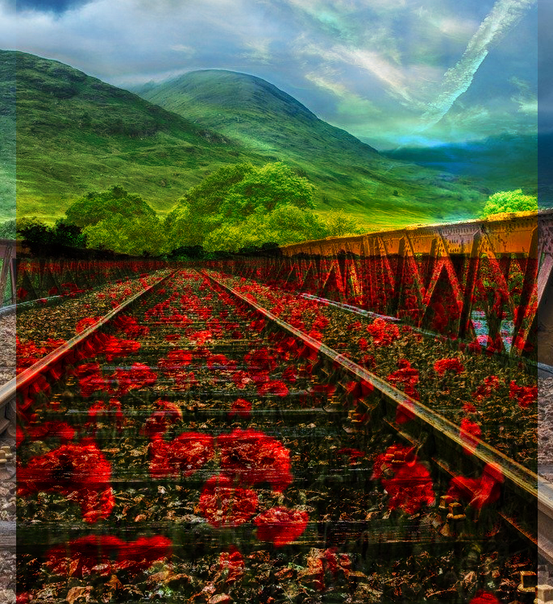

Lab 2 - Part B
Brief Instructions:
Layers and Layer Blends
The objective of this project was to blend two pictures into layers. Here, I superimposed the flower bed onto the rail track to give the flowers' appearance on the trails.
I chose to do it this way because I wanted to see how two completely different pictures would look together.
Last worked on date: 09/19/2021

Last worked on date: 09/19/2021

Last worked on date: 09/19/2021